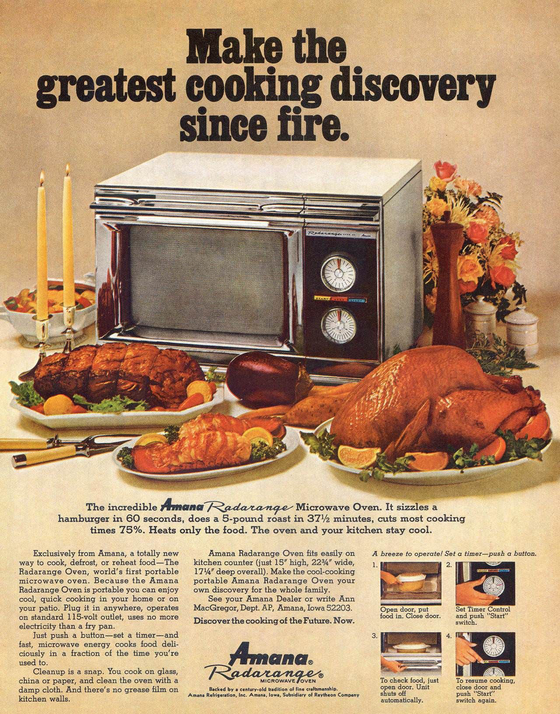
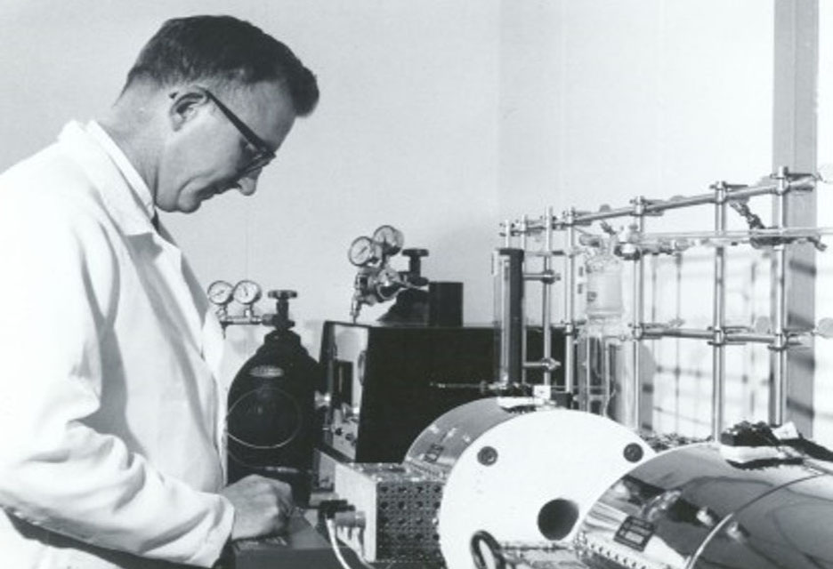
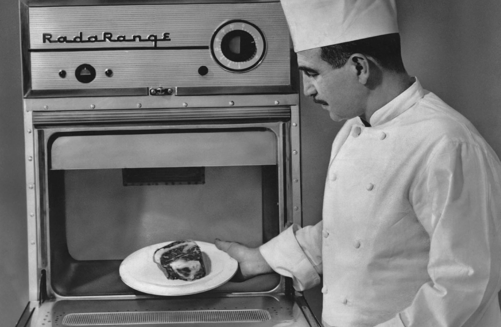
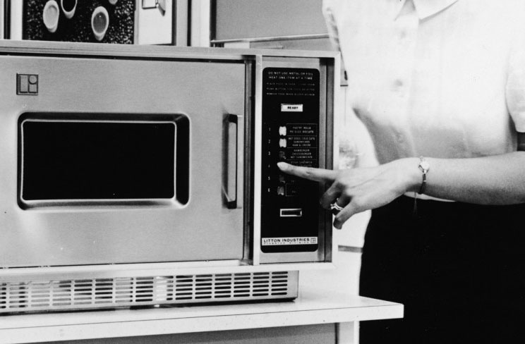
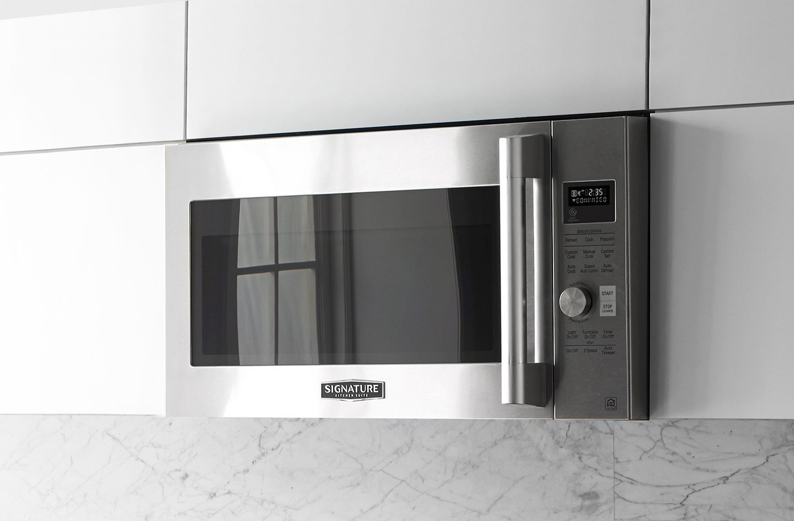

A BRIEF HISTORY
OF THE MICROWAVE
Originally used as a war weapon in the mid 20th century, Microwaves have come a long way since its initial development. This technology completely revolutionized how food is prepared in the common kitchen.

MICROWAVES WERE DEVELOPED AFTER WWII DURING THE 1940'S. INITIALLY, MICROWAVE TECHNOLOGY WAS USED IN HIGH FREQUENCY RADARS

PERCY SPENCER, AN ENGINEER AT RAYTHEON, ACCIDENTLY DISCOVERED THE HEATING CAPABILITIES OF MICROWAVE TECHNOLOGY WHILE HE WAS TESTING A MAGNETRON IN HIS LAB

HE IS KNOWN AS ONE OF THE FIRST PEOPLE TO EXPERIMENT WITH THE IDEA OF INTEGRATING MICROWAVE TECHNOLOGY INTO CULINARY APPLIANCES

AT FIRST, MICROWAVES WERE ONLY INTENDED FOR RESTAURANT USE DUE TO ITS LARGE SIZE AND EXPENSIVE PRICE TAG

HOWEVER, COMPANIES BEGAN PRODUCING SMALLER AND MORE AFFORDABLE MODELS OF THE MICROWAVE FOR RESIDENTIAL USE AROUND THE 1970'S

NOW, MICROWAVES ARE VIRTUALLY FOUND ANYWHERE, AND THEY’RE A POPULAR CULINARY APPLIANCE THAT IS USED TO PREPARE A WIDE VARIETY OF FOOD